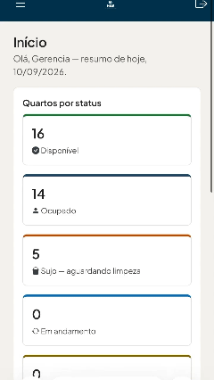

HGS — Hotel Governance System
Sistema de governança hoteleira para uma pousada de 38 quartos.
A comunicação entre recepção, camareiras e manutenção era toda verbal, e o controle dos quartos ficava num caderno de papel. A informação se perdia, ninguém sabia o estado real de cada quarto e não havia histórico para consultar depois.
Cada quarto tem um status que todos enxergam. Quando a recepção registra um checkout, a camareira é avisada na hora; quando a limpeza termina, a recepção já vê que o quarto está liberado. Cada passo fica registrado com data, hora e responsável.
A camareira não precisa mais descer à recepção para saber quais quartos liberar, e a recepção deixou de ligar para o andar para cobrar a limpeza. O status está na tela. As dúvidas de "esse quarto já está pronto?" praticamente sumiram do dia a dia.
Nasceu como projeto acadêmico e hoje está em produção, usado todos os dias pela equipe da pousada. A versão em aplicativo, para celular, está em construção.


As telas usam dados fictícios, criados só para demonstração.
- PHP
- MySQL
- HTML
- CSS
- JavaScript
- Git e GitHub
- Figma
Protótipo original em Java; app em construção com Flutter e Dart.

Acima, um trecho do HGS em uso. A gravação completa eu envio pessoalmente pelo WhatsApp.
Solicitar gravação completa